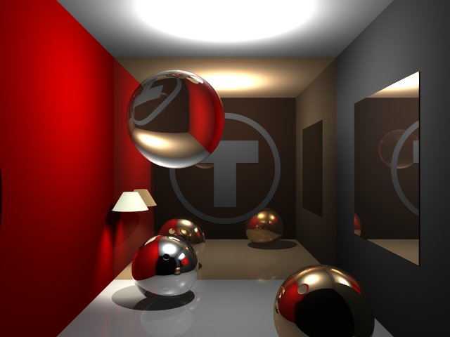

LtRay的艰难重构
文章目录
从去年九月份开始，我就在着手实现一个光线跟踪器：LtRay。刚开始进展很快，差不多三天的时间，光线跟踪器的雏形就已经具备了，能够对一些简单的图元比如球体、平面等进行渲染，并且还具有反射、阴影效果。但是越到后面，开发的进度就越来越慢了，近两个月几乎就是做些填补工作。现在每改一个地方，几乎就得花费一两天的时间来修复相关的代码。前不久刚定下v0.1.7版本，渲染的效果如下：

而这跟我两个月前的版本相比，几乎就只是把光线跟踪的核心分离出来，另外把场景文件的格式从json改成了toml。每遇到一个问题，我都在纠结到底该哪一种方式来解决，实际上，这种犹豫耗费了大量的时间。摆在我面前的方法仿佛有无数种，但就是没法确定哪一种是最好的，结果就是反复修改来修改去，比如我遇到的有这些坑：
第三方库
针对于第三方库这个问题，其实一开始我是拒绝使用的。我使用的是CMake构建工程的方式，因为大量使用第三方库的话会导致环境配置麻烦，CMakeLists编写复杂，为此花费了很多时间。而很多库其实只用到了功能的一小部分，完全可以自己实现，比如PBM和PGM图片的读写，这个很简单，我就直接自己写了。到后面，需要用到json来定义场景文件的时候，我是依然选择了自己写json解析器。这真是已经费力不讨好的事情，我花了很多时间编写完善json解析器，到后面发现用json定义场景文件并不是很方便，转而又使用toml。前后一折腾，那些工作就相当于白干了。
工程构建
我曾算是Linux和开源精神的簇拥，就连一个很小的程序都要写个CMakeLists，时时刻刻注意着跨平台。但现在让我去写代码，我会毫不犹豫选择Windows和Visual Studio，因为Visual Studio实在是太方便了，特别是结合NuGet来管理第三方库，简直畅快无比，再也不用手动去配置和管理第三方库了。所以我现在是大胆使用第三方库，只要这个库是比较稳定的有人在维护的就好，比如现在LtRay中就用了glfw来显示窗口、FreeImage来加载图片、cpptoml来解析toml文件。效率就是生产力，在生产力面前，那些Linux情怀就免谈了吧。
规范
代码规范很容易解决，难的就是C++多范式带来的选择困难。同一个问题有无数种解决方法，而我往往是实现了一种，后来又发现不怎么好，又回过头来修改，就这样反反复复不知道修改了多少次。期初代码量很少还好，到现在几乎全是改代码了。
该不该用getter，setter？
我起初是恪守“类应该对外部只应该暴露接口函数”这一规则的，但是到后面发现这真是太繁琐了，可读性和可维护性都大大降低了。比如Point、Vector、Color这些类，只有三四个成员变量，而且这些变量是不受约束的，本来一个很简单的struct Color{float r,g,b};结果用getter、setter包装起来后，代码真是变得啰嗦无比。我个人觉得对于简单类使用这种getter、setter方式无异于掩耳盗铃。
该不该用全部改用智能指针？
C++11中的智能指针确实很方便，但其实质还是个资源管理的工具，如果把所有的指针都用智能指针代替，那就会使得资源的生命周期难以掌控。最好的方法就是只在需要自动回收资源的地方使用智能指针，对于那些只是暂时借用对象的指针的函数，直接传递指针就好了。
C++入门并不难，但这些寻求“最佳实践”的过程可能会永无止境。
文章作者 Lianera
上次更新 2017年02月15日